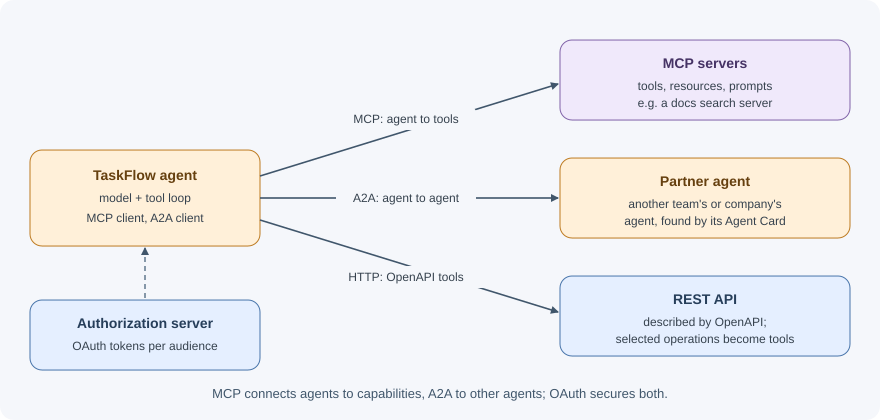

Agent Protocols and Interoperability¶
Every integration in the earlier lessons was hand-written: TaskFlow defined its tools, ran its own loop and called its own API. That stops scaling when other products want to use TaskFlow's tools, when TaskFlow's agent needs another company's agent, or when a vendor offers a large REST API. Agent protocols standardize those connections: MCP connects an AI application to tools and data, A2A connects agents to other agents, and OpenAPI descriptions let you turn existing HTTP APIs into tools. OAuth decides who may use any of them.
This lesson covers what each protocol is for, its status and governance as of November 2026, how discovery works, how to build tools from OpenAPI safely, and how authorization should work across these boundaries. It builds on MCP and agent integrations, which explains MCP's hosts, clients, servers, transports and setup.
Why it matters¶
- Custom integrations multiply. Without a shared protocol, each pair of AI application and tool needs its own glue code. A protocol turns that into one implementation on each side.
- Discovery is not trust. A protocol tells you what a server or agent claims it can do. Whether to let it act for your users is still your decision.
- Authorization mistakes cross company lines. A token accepted by the wrong server, or forwarded to an API it was never meant for, turns one compromise into many.
- The specifications move fast. MCP's 2026-07-28 revision removed protocol sessions, and A2A reached 1.0 only in March 2026. Version negotiation and pinned versions matter.
Real-world usage¶
- MCP is an open protocol that Anthropic donated to the Agentic AI
Foundation (AAIF), which the Linux Foundation formed on December 9,
2025 with MCP, Block's goose and OpenAI's AGENTS.md as founding
projects. The current specification revision is
2026-07-28; the MCP Registry, a central metadata service for public MCP servers with DNS-verified namespaces, was still marked preview in November 2026. The TypeScript SDK's current packages are@modelcontextprotocol/serverand@modelcontextprotocol/client(version 2.4 in November 2026). - A2A (Agent2Agent) was launched by Google in April 2025 and became a Linux Foundation project on June 23, 2025. IBM's Agent Communication Protocol merged into it in August 2025. Version 1.0, the first stable specification, shipped in March 2026 with multiple protocol bindings, version negotiation, multi-tenancy and signed Agent Cards. On August 17, 2026 the AAIF announced A2A as a hosted project, reporting backing from more than 150 organizations and production use in supply chain, financial services and mobile platforms.
- OpenAPI 3.2.1 (September 2026) is the current version of the OpenAPI Specification. Its Schema Object is based on JSON Schema Draft 2020-12, the same family of schemas that tool definitions use.
- OAuth underpins both protocols. MCP's authorization specification builds on OAuth 2.1 (an IETF draft), Protected Resource Metadata (RFC 9728) and Resource Indicators (RFC 8707). A2A Agent Cards declare security schemes such as OAuth 2.0, OpenID Connect, API keys and mutual TLS.
How it works¶
Three connections, one agent¶

| Question | MCP | A2A | OpenAPI tools |
|---|---|---|---|
| What is on the other side? | Capabilities: tools, resources, prompts | Another agent with its own model and tools | An ordinary HTTP API |
| Who plans the work? | Your agent | The remote agent | Your agent |
| Unit of work | A tool call or a resource read | A task with states, messages and artifacts | One HTTP request |
| How long it runs | Usually one request (long jobs use the tasks extension) | Seconds to days, with streaming or push updates | One request |
| Discovery | server/discover, host configuration, registries |
Agent Card at a well-known URL, catalogs, configuration | The OpenAPI document |
| TaskFlow example | Other AI hosts use TaskFlow's task tools | A partner's planning agent asks TaskFlow for a draft plan | TaskFlow's agent files issues in a vendor tracker |
The short version: use MCP to give an agent capabilities, A2A to delegate a goal to an agent you do not control, and generated tools for plain APIs.
MCP in 2026¶
The MCP page covers the model of
hosts, clients and servers. The 2026-07-28 revision changed the
plumbing in ways that matter for implementers:
- Stateless requests. The
initializehandshake and protocol-level sessions (theMcp-Session-Idheader) are gone. Each request carries its protocol version and client capabilities in_meta, and a server that needs state across calls passes explicit handles as tool arguments. server/discover. Servers must implement it to advertise their supported versions, capabilities and identity.- Multi round-trip requests. Instead of the server sending its own requests to the client (for sampling, elicitation or roots), a server returns an "input required" result and the client retries the original request with the answers.
- Extensions. Long-running tasks moved out of the core protocol into an official extension, alongside others such as MCP Apps.
- Deprecations. Roots, Sampling, Logging, the old HTTP+SSE transport and Dynamic Client Registration are deprecated, with a minimum twelve-month window under the new feature lifecycle policy. Client ID Metadata Documents replace Dynamic Client Registration.
For TaskFlow, an MCP server is a thin layer over the tool code from tool calling in practice: the same schemas, the same authorization, and the same rule that writes are proposals a user confirms.
A2A: agents talking to agents¶
An A2A server publishes an Agent Card, a JSON document describing the agent: name, description, provider, version, the interfaces it supports (protocol binding, URL and protocol version, in order of preference), its capabilities (streaming, push notifications, an authenticated extended card), its security schemes and its skills, each with a description, tags, examples and input and output media types.
Clients find cards in three ways: the well-known URL
https://{domain}/.well-known/agent-card.json, a registry or catalog, or
direct configuration. Cards can be signed with JSON Web Signature over a
canonical JSON form, so a client can check that a card was not altered.
Servers should send Cache-Control and ETag headers, and clients
should revalidate instead of refetching.
![Diagram: top row, the four steps of an A2A interaction: discover by GET agent-card.json, send with SendMessage or its streaming variant, follow updates over SSE or push notifications, and control with GetTask and CancelTask. Below, task states in A2A 1.0: SUBMITTED moves to WORKING; WORKING can move to INPUT_REQUIRED (for example "Which project?") or AUTH_REQUIRED and back when the client answers; WORKING ends in COMPLETED with artifacts such as a draft plan as JSON, or in FAILED, CANCELED or REJECTED.](../a2a-task-lifecycle.svg)
Work happens in tasks. The client sends a message; the remote agent
creates a task and moves it through states until it completes with
artifacts (the outputs) or ends in failure, cancellation or
rejection. A task can pause for input or for authorization, and the
client continues it with another message on the same task. Version 1.0
defines three bindings (JSON-RPC 2.0 with Server-Sent Events for
streaming, gRPC, and HTTP+JSON), an A2A-Version header for version
negotiation, and operations including SendMessage,
SendStreamingMessage, GetTask, ListTasks, CancelTask,
SubscribeToTask and push-notification configuration.
The remote agent is opaque: you see its card, its messages and its artifacts, not its prompts or tools. Treat its output like any other untrusted input, and give it only the data the task needs.
Tools from OpenAPI¶
Many tools wrap existing REST APIs, and many of those APIs publish an OpenAPI document. Generating tool definitions from it saves effort and keeps schemas in sync, if you stay selective:
- Allowlist operations by
operationId. A vendor API might have 200 operations, includingdeleteProject. Expose the handful the agent needs; OpenAI's guide suggests keeping fewer than 20 functions available at the start of a turn. - Rewrite descriptions for the model. API summaries are written for developers; add when to use the operation and what it returns.
- Keep the base URL and credentials on the server. The model supplies arguments, never hosts, so it cannot point the tool at an internal address.
- Encode path parameters. An argument such as
MOB/../adminmust become one path segment, not a path traversal. Refuse a bare.or..: encoding leaves them unchanged, and URL parsing resolves them. - Trim responses. Return only the fields the next step needs.
OAuth for tools and agents¶
When an agent acts for a user in another system, it needs a token that says who the user is, which system the token is for, and what it may do. Three rules prevent most incidents:
- The user delegates, with consent. Use the authorization code flow with PKCE (RFC 7636), so the user signs in at the authorization server and approves scopes. The agent never sees a password.
- Tokens are bound to one audience. The client asks for a token for a specific resource (RFC 8707), and the server accepts only tokens issued for itself. MCP's security guidance calls accepting and forwarding other tokens "token passthrough" and forbids it: "MCP servers MUST NOT accept any tokens that were not explicitly issued for the MCP server."
- Downstream calls get their own tokens. If TaskFlow's MCP server must call another API, it uses its own credentials or exchanges the user's token for a new one scoped to that API (OAuth 2.0 Token Exchange, RFC 8693), never the token it received.
![Diagram: sequence between the MCP client, the user's browser, the authorization server and the MCP server. 1, the client calls tools/call without a token. 2, the server answers 401 with a WWW-Authenticate header naming the resource metadata. 3, the client fetches the protected resource metadata (RFC 9728). 4, it fetches the authorization server metadata. 5, it opens the authorize URL in the browser. 6, the browser request carries PKCE and the resource parameter, and the user consents. 7, the code returns via redirect. 8, the client exchanges code, verifier and resource for a token. 9, it calls tools/call with a bearer token whose audience is the server. 10, the server checks issuer, audience, expiry and scope, and never passes the token on.](../mcp-oauth-flow.svg)
For remote MCP servers the specification fixes the flow in the diagram.
MCP authorization is optional, and servers on the stdio transport should
take credentials from their environment instead. The MCP server acts as
an OAuth resource server: it must publish Protected Resource Metadata
and tell clients where it is, either in the WWW-Authenticate header of
a 401 response (the flow in the diagram) or at the RFC 9728 well-known
URI, which clients try when the header has no resource_metadata.
Clients must send the resource
parameter with the server's canonical URI, and servers must validate
that tokens were issued for them. A2A works the same way at the level of
the Agent Card, whose security schemes tell clients how to obtain
credentials.
Discovery and trust¶
Discovery answers "what exists?"; trust answers "should we use it?". Before an agent uses a server or remote agent:
- Know the publisher. Registries verify namespaces (the MCP Registry uses DNS verification), and signed Agent Cards prove who issued a card. Neither proves the software is safe.
- Pin and review. Pin server and package versions, and review tool names and descriptions. A description is text the model reads, so a changed description can change behavior; alert when a server's tool list or descriptions change, and re-review before accepting.
- Least privilege per connection. Each server or agent gets only the scopes and data it needs, and write tools stay behind confirmation.
- Limit the network. Remote servers and agents are outbound connections; restrict where the host may connect.
- Treat everything returned as untrusted. Tool results, resources and artifacts can carry injected instructions; see prompt injection and defenses.
When to use and when not to use¶
Use MCP when you want TaskFlow's tools available in many AI hosts (desktop assistants, IDEs, other companies' agents) or want your agent to use many third-party tools without custom code for each.
Use A2A when the other side is an agent with its own planning, state and lifetime, owned by someone else: you delegate a goal ("draft a plan for the v3 launch") rather than call a function.
Use OpenAPI-generated tools for plain HTTP APIs your agent calls directly, with an allowlist.
Skip the protocols when:
- the tool lives in your own codebase and only your agent uses it; a direct function call is simpler and faster;
- the remote side is deterministic; an API call beats an agent-to-agent conversation;
- you cannot yet authenticate and authorize users across the boundary.
Practical examples¶
The code was type-checked with TypeScript 7.0, @a2a-js/sdk 1.3,
jose 6.2, @anthropic-ai/sdk 1.8 and zod 4.6, and the tests ran on
Node 22 in November 2026, with a local stub server for the Agent Card and
locally generated signing keys. No real partner, vendor or authorization
server was contacted.
1. TaskFlow's Agent Card¶
Served at https://agents.taskflow.example.com/.well-known/agent-card.json
with Cache-Control: max-age=300 and an ETag:
{
"name": "TaskFlow Planner",
"description": "Drafts project plans as TaskFlow tasks and reports project status. Drafts are saved for review; a TaskFlow user approves them before any task is created.",
"supportedInterfaces": [
{
"url": "https://agents.taskflow.example.com/a2a/jsonrpc",
"protocolBinding": "JSONRPC",
"protocolVersion": "1.0"
},
{
"url": "https://agents.taskflow.example.com/a2a/rest",
"protocolBinding": "HTTP+JSON",
"protocolVersion": "1.0"
}
],
"provider": {
"organization": "TaskFlow (example)",
"url": "https://taskflow.example.com"
},
"version": "2.3.0",
"documentationUrl": "https://docs.taskflow.example.com/agents/planner",
"capabilities": {
"streaming": true,
"pushNotifications": true,
"extendedAgentCard": true
},
"securitySchemes": {
"taskflowOAuth": {
"oauth2SecurityScheme": {
"oauth2MetadataUrl": "https://auth.taskflow.example.com/.well-known/oauth-authorization-server",
"flows": {
"authorizationCode": {
"authorizationUrl": "https://auth.taskflow.example.com/authorize",
"tokenUrl": "https://auth.taskflow.example.com/token",
"scopes": {
"plans:draft": "Create draft plans for review",
"status:read": "Read project status"
},
"pkceRequired": true
}
}
}
}
},
"securityRequirements": [
{ "schemes": { "taskflowOAuth": { "list": ["status:read"] } } }
],
"defaultInputModes": ["text/plain", "application/json"],
"defaultOutputModes": ["application/json", "text/plain"],
"skills": [
{
"id": "draft-project-plan",
"name": "Draft a project plan",
"description": "Breaks a goal into milestones and tasks with owners and due dates, saved as a draft in one TaskFlow project.",
"tags": ["planning", "tasks", "projects"],
"examples": ["Plan the v3 launch for the mobile project, finishing by March 31."],
"inputModes": ["text/plain", "application/json"],
"outputModes": ["application/json"]
},
{
"id": "project-status",
"name": "Report project status",
"description": "Summarizes open, overdue and finished tasks for one project.",
"tags": ["status", "reporting"],
"examples": ["What is overdue in the mobile project?"],
"inputModes": ["text/plain"],
"outputModes": ["application/json", "text/plain"]
}
]
}
The public card names only status:read; the plans:draft skill's
details and higher scopes can live in the extended card, which A2A
serves only to authenticated clients. A production card would also carry
a signatures entry.
2. Discovering a partner's agent¶
// server/a2a/discover-agent.ts
import { AGENT_CARD_PATH } from "@a2a-js/sdk";
import { z } from "zod";
// The fields this client relies on; unknown fields are allowed.
const AgentCard = z.object({
name: z.string(),
version: z.string(),
supportedInterfaces: z.array(z.object({
url: z.url({ protocol: /^https$/ }),
protocolBinding: z.string(),
protocolVersion: z.string(),
})).min(1),
skills: z.array(z.object({ id: z.string(), name: z.string(),
description: z.string() })),
securitySchemes: z.record(z.string(), z.unknown()).optional(),
});
export type AgentCard = z.infer<typeof AgentCard>;
type Cached = { card: AgentCard; etag: string | null };
const cache = new Map<string, Cached>();
// Partners are configured by origin; the card's location is fixed by the
// spec, so a model never chooses where to fetch it from.
export async function fetchAgentCard(origin: string): Promise<AgentCard> {
const url = new URL(AGENT_CARD_PATH, origin.endsWith("/") ? origin : `${origin}/`);
const cached = cache.get(url.href);
const res = await fetch(url, { redirect: "error",
headers: cached?.etag ? { "If-None-Match": cached.etag } : {},
signal: AbortSignal.timeout(5_000) });
if (res.status === 304 && cached) return cached.card;
if (!res.ok) throw new Error(`Agent card fetch failed: HTTP ${res.status}`);
const card = AgentCard.parse(await res.json());
cache.set(url.href, { card, etag: res.headers.get("etag") });
return card;
}
// The card lists interfaces in the agent's order of preference. Take the
// first one this client supports, at a 1.x protocol version.
export function chooseInterface(card: AgentCard, supported: string[]) {
const match = card.supportedInterfaces.find((i) =>
supported.includes(i.protocolBinding) && i.protocolVersion.startsWith("1."));
if (!match) throw new Error(`${card.name} offers no compatible interface`);
return match;
}
redirect: "error" stops a card URL from redirecting somewhere else, and
the ETag cache turns repeat lookups into 304 Not Modified responses.
3. Tools from an OpenAPI document¶
// server/integrations/openapi-tools.ts
import type Anthropic from "@anthropic-ai/sdk";
type Json = Record<string, any>;
type Op = { method: string; path: string; params: Json[]; hasBody: boolean };
const METHODS = ["get", "post", "put", "patch", "delete"];
// Inline local references such as "#/components/schemas/Issue".
function resolve(node: unknown, doc: Json, seen = new Set<string>()): unknown {
if (Array.isArray(node)) return node.map((n) => resolve(n, doc, seen));
if (!node || typeof node !== "object") return node;
const ref = (node as Json).$ref;
if (typeof ref === "string") {
if (!ref.startsWith("#/") || seen.has(ref)) {
throw new Error(`Unsupported or circular $ref: ${ref}`);
}
const target = ref.slice(2).split("/").reduce((o: Json, k) => o?.[k], doc);
return resolve(target, doc, new Set([...seen, ref]));
}
return Object.fromEntries(Object.entries(node).map(([k, v]) =>
[k, resolve(v, doc, seen)]));
}
// Turn ONLY the allowlisted operations into tools. Each operation's path
// and query parameters, plus its JSON body, become one input schema.
export function toolsFromOpenApi(doc: Json, allow: string[]) {
const tools: Anthropic.Tool[] = [];
const ops = new Map<string, Op>();
for (const [path, item] of Object.entries<Json>(doc.paths ?? {})) {
for (const method of METHODS) {
const op = item[method];
if (!op?.operationId || !allow.includes(op.operationId)) continue;
const params = (resolve([...(item.parameters ?? []),
...(op.parameters ?? [])], doc) as Json[])
.filter((p) => p.in === "path" || p.in === "query");
const properties: Json = {};
const required: string[] = [];
for (const p of params) {
properties[p.name] = { ...p.schema, description: p.description };
if (p.required || p.in === "path") required.push(p.name);
}
const body = op.requestBody?.content?.["application/json"]?.schema;
if (body) {
properties.body = resolve(body, doc);
if (op.requestBody.required) required.push("body");
}
tools.push({
name: op.operationId,
description: [op.summary, op.description].filter(Boolean).join(" "),
input_schema: { type: "object", properties, required,
additionalProperties: false },
});
ops.set(op.operationId, { method: method.toUpperCase(), path,
params, hasBody: Boolean(body) });
}
}
return { tools, ops };
}
// Build the HTTP request from validated input. The base URL and the
// credentials come from server configuration, never from the model.
export function buildRequest(baseUrl: string, op: Op, input: Json) {
let path = op.path;
const query = new URLSearchParams();
for (const p of op.params) {
const value = input[p.name];
if (value === undefined) continue;
if (p.in === "path") {
const segment = encodeURIComponent(String(value));
// "." and ".." survive encoding, and URL parsing would resolve them.
if (segment === "." || segment === "..") {
throw new Error(`Invalid ${p.name}.`);
}
path = path.replace(`{${p.name}}`, segment);
} else {
query.set(p.name, String(value));
}
}
const url = new URL(baseUrl.replace(/\/$/, "") + path);
url.search = query.toString();
return { method: op.method, url: url.href,
body: op.hasBody ? JSON.stringify(input.body ?? {}) : undefined };
}
Given a vendor's issue-tracker document with listIssues, createIssue
and deleteProject, and an allowlist of the first two, the test prints:
listIssues, createIssue
{"type":"object","properties":{"projectKey":{"type":"string","description":"Project key, e.g. MOB."},"body":{"type":"object","required":["title"],"additionalProperties":false,"properties":{"title":{"type":"string"},"body":{"type":"string"}}}},"required":["projectKey","body"],"additionalProperties":false}
GET https://api.example.com/v2/projects/MOB%2F..%2Fadmin/issues?status=open
deleteProject never became a tool, and the traversal attempt in
projectKey stayed inside one encoded path segment. Validate the
model's input against the generated schema before buildRequest, as in
the executor from the first lesson.
4. An MCP server that accepts only its own tokens¶
The TaskFlow MCP server publishes its Protected Resource Metadata (RFC
9728) at https://mcp.taskflow.example.com/.well-known/oauth-protected-resource/mcp:
{
"resource": "https://mcp.taskflow.example.com/mcp",
"authorization_servers": ["https://auth.taskflow.example.com"],
"scopes_supported": ["tasks:read", "tasks:propose"],
"bearer_methods_supported": ["header"],
"resource_name": "TaskFlow MCP server"
}
Every request passes through this check before any tool runs:
// mcp-server/verify-token.ts
import { createRemoteJWKSet, jwtVerify, type JWTVerifyGetKey } from "jose";
// The canonical URI of THIS server: tokens must name it as audience.
const RESOURCE = "https://mcp.taskflow.example.com/mcp";
const ISSUER = "https://auth.taskflow.example.com";
const jwks: JWTVerifyGetKey = createRemoteJWKSet(
new URL(`${ISSUER}/.well-known/jwks.json`));
export class Unauthorized extends Error {
constructor(readonly status: 401 | 403, message: string,
readonly scope?: string) { super(message); }
}
// Accept only tokens issued by our authorization server FOR this server.
// A token minted for another API is refused, never passed through.
export async function verifyAccessToken(authorization: string | undefined,
needScope: string, keys: JWTVerifyGetKey = jwks) {
const token = authorization?.match(/^Bearer (.+)$/)?.[1];
if (!token) throw new Unauthorized(401, "Missing bearer token.");
let payload;
try {
({ payload } = await jwtVerify(token, keys,
{ issuer: ISSUER, audience: RESOURCE, algorithms: ["ES256"],
requiredClaims: ["exp", "sub"] })); // jose checks exp only if present
} catch {
throw new Unauthorized(401, "Invalid or expired token.");
}
const scopes = String(payload.scope ?? "").split(" ");
if (!scopes.includes(needScope)) {
throw new Unauthorized(403, `Token lacks scope ${needScope}.`, needScope);
}
return { userId: String(payload.sub), scopes };
}
// The challenge tells MCP clients where the Protected Resource Metadata
// (RFC 9728) lives; a 403 also names the missing scope.
export function challengeHeader(missingScope?: string) {
const meta = "https://mcp.taskflow.example.com/.well-known/oauth-protected-resource/mcp";
const scope = missingScope
? `error="insufficient_scope", scope="${missingScope}", ` : "";
return `Bearer ${scope}resource_metadata="${meta}"`;
}
A 401 sends challengeHeader() in WWW-Authenticate. A 403 for a
missing scope sends challengeHeader(scope), which adds
error="insufficient_scope" and the scope, as in the specification's
step-up example, so the client can ask the user for more access. The
test signs tokens with a locally generated key and checks three cases:
# accepted for user-42
# refused: 401 Invalid or expired token.
# refused: 403 Token lacks scope tasks:read.
The first refusal is a valid token for a different API
(https://api.other.example.com): signed by the right issuer, but not
issued for this server, so it is rejected.
Best practices¶
- Choose by the other side: capabilities through MCP, autonomous agents through A2A, plain APIs through allowlisted generated tools.
- Pin protocol and SDK versions, negotiate versions explicitly, and test against the specification revision you claim to support.
- Generate tool schemas from OpenAPI, but expose only allowlisted operations, with rewritten descriptions and server-side base URLs.
- Use authorization code with PKCE for user delegation, request tokens for one resource, and validate issuer, audience, expiry and scope on every request.
- Never forward a token you received; use your own credentials or token exchange.
- Publish signed, cacheable Agent Cards with minimal public detail, and keep sensitive skills in the authenticated extended card.
- Review, pin and monitor third-party servers and agents, and alert when their tool lists or descriptions change.
- Log every cross-boundary call with the remote identity, task ID and scopes used.
In production¶
- A partner's agent cannot connect after an upgrade. Detect: A2A calls fail with version errors after a release. Cause: the server dropped the protocol version the partner pinned, or the client picked an interface it does not support. Fix: list supported interfaces in preference order, keep old versions for a published deprecation window, and test against partners' versions.
- An MCP client loops on 401 responses.
Detect: repeated authorization redirects in client logs.
Cause: the server's
WWW-Authenticateheader lackedresource_metadata, or the metadata listed a differentresourcethan the URL the client used. Fix: publish the metadata at the documented location, makeresourcethe server's canonical URI, and test discovery with a reference client. - A token issued for TaskFlow's MCP server works against the billing API. Detect: billing logs show requests whose token audience is the MCP server. Cause: the MCP server passed the user's token through, and the billing API did not check audience. Fix: stop passthrough, use token exchange or service credentials, and make every API validate audience.
- The agent starts calling a tool in unexpected ways. Detect: a third-party tool's call rate and arguments change without a release on your side. Cause: the server changed the tool's description, and the model followed the new text. Fix: pin versions, alert on tool-list changes, and require review before new definitions reach users.
- Generated tools overwhelm the model. Detect: wrong tool choices and long prompts after importing a vendor OpenAPI document. Cause: every operation became a tool. Fix: allowlist a handful of operations and rewrite their descriptions.
Important terminology¶
- MCP (Model Context Protocol): an open protocol connecting AI applications to tools, resources and prompts.
- A2A (Agent2Agent): an open protocol for agents to discover each other and delegate tasks.
- Agent Card: the JSON document that describes an A2A agent, usually
at
/.well-known/agent-card.json. - Skill (A2A): a capability listed in an Agent Card.
- Task and artifact (A2A): a unit of delegated work with a lifecycle, and its output.
- Protocol binding: how A2A messages travel: JSON-RPC, gRPC or HTTP+JSON.
- Protected Resource Metadata: a document (RFC 9728) where a resource server names its authorization servers and scopes.
- Resource indicator: the
resourceparameter (RFC 8707) that binds a token to one server. - Token passthrough: forwarding a received token to another service; an anti-pattern.
- Token exchange: trading one token for another with a different audience or scope (RFC 8693).
- AAIF: the Agentic AI Foundation, under the Linux Foundation, which hosts MCP, A2A and related projects.
Common mistakes and misconceptions¶
- "MCP and A2A compete." They solve different problems: tools for an agent, and agents for an agent.
- "If it is in a registry, it is safe." Registries verify names and metadata, not behavior.
- "An Agent Card proves who runs the agent." Only a verified signature, or a card fetched from a domain you trust, does.
- "OAuth means the token works everywhere the user has access." A token should work for one audience and the scopes it lists.
- "Generating tools from OpenAPI means exposing the API." Expose only what the agent needs.
- "A remote agent's answer can be trusted because it is an agent." It is untrusted input, like any tool result.
Revision questions¶
- What is on the other side of an MCP connection, and of an A2A connection? Give a TaskFlow example of each.
- Name three changes in MCP's
2026-07-28revision and why they matter to server authors. - Where does a client look for an A2A Agent Card, and what does it use to pick an interface?
- List the A2A 1.0 task states, and say which ones need the client to act.
- Why does
buildRequesttake the base URL from configuration, and what doesencodeURIComponentprevent? - What is token passthrough, and what should an MCP server do instead when it needs to call another API?
- A vendor's OpenAPI document has 180 operations and TaskFlow's agent needs six. What share of the operations does the allowlist expose, and why does that help the model? (6 / 180, about 3.3 percent; fewer, clearer choices and shorter prompts.)
- Which headers make Agent Card fetching cheap, and how does the client use them?
Further learning¶
- Model Context Protocol specification (latest)
- MCP 2026-07-28 key changes
- MCP authorization
- MCP security best practices
- A2A protocol specification
- AAIF: A2A joins AAIF's open agentic stack
- OpenAPI Specification
- RFC 9728: OAuth 2.0 Protected Resource Metadata
- RFC 8707: Resource Indicators for OAuth 2.0
- Next: interview questions and answers. Back to the tool calling and agents overview.